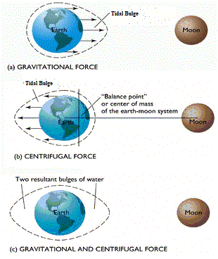

PHYSICAL GEOGRAPHY
CONTENTS
Geomorphology
Climatology
Oceanography
Ocean Water Movements
Ocean Water is constantly moving from one place to another. The horizontal motion of oceans include the ocean currents and waves. The vertical motion includes the tides.
An Ocean's movement is affected by its physical characteristics like temperature, salinity, density and the external forces like of the sun, moon and the winds influence the movement of ocean water.
Waves
- Waves are oscillatory movements of the ocean water that result in the rise and fall of surface water. Waves travel because wind pushes the water body in its course while gravity pulls the crests of the waves downward. The falling water pushes the former troughs upward, and the wave moves to a new position. The actual motion of the water beneath the waves is circular. It indicates that things are carried up and forward as the wave approaches, and down and back as it passes.
- Most of the waves are caused by the wind driving against water. Waves are actually the energy, not the water as such, which moves across the ocean surface. Water particles only travel in a small circle as a wave passes.
- This motion of the surface water seldom affects the stagnant deep bottom water of the oceans.
- As a wave approaches the beach, it slows down. This is due to the friction occurring between the dynamic water and the sea floor. And, when the depth of water is less than half the wavelength of the wave, the wave breaks.
- The largest waves are found in the open oceans. Waves continue to grow larger as they move and absorb energy from the wind.

Tsunami
- An earthquake, a volcanic eruption or underwater landslides can shift large amounts of ocean water. As a result a huge tidal wave called tsunami, that may be as high as 15m., is formed.
- The word 'tsunami' stands for 'harbour wave' in japanese, as they almost always destroys ships along the harbour.
- The 2004 Indian Ocean tsunami was among the deadliest natural disasters in human history, with at least 230,000 people killed or missing in 14 countries bordering the Indian Ocean. It was caused by an earthquake which inturn is caused by a rupture along the fault between the Burma Plate and the Indian Plate.
Characteristics of Waves
- Wave crest and trough: The highest and lowest points of a wave are called the crest and trough respectively.
- Wave height: is the vertical distance from the bottom of a trough to the top of a crest of a wave.
- Wavelength: is the horizontal distance between two successive crests.
- Wave speed: is the rate at which the wave moves through the water, and is measured in knots.
- Wave frequency: It is the number of waves passing a given point during a one-second time interval.
Tides
- Tides are the the periodical/rhythmic rise and fall of the ocean water, once or twice a day, mainly due to the attraction of the sun and the moon, and the rotation of the Earth.
- The moon’s gravitational pull to a great extent and to a lesser extent the sun’s gravitational pull, are the major causes for the occurrence of tides. Another factor is centrifugal force formed due to earth's rotation which acts to counter balance the gravity.
-
Together, the gravitational pull and the centrifugal force are
responsible for creating the two major tidal bulges on the
earth. On the side of the earth facing the moon, a tidal bulge
occurs while on the opposite side though the gravitational
attraction of the moon is less as it is farther away, the
centrifugal force causes tidal bulge on the other side.

- The tidal bulges on wide continental shelves, have greater height. When tidal bulges hit the mid-oceanic islands they become low. The shape of bays and estuaries along a coastline can also magnify the intensity of tides. Funnel-shaped bays greatly change tidal magnitudes. When the tide is channelled between islands or into bays and estuaries they are called tidal currents.
- Note: The highest tides in the world occur in the Bay of Fundy in Nova Scotia, Canada. The tidal bulge is 15 - 16 m.
Types of Tides
Tides based on Frequency
- Semi-diurnal tide: The most common tidal pattern, featuring two high tides and two low tides each day. The successive high or low tides are approximately of the same height.
- Diurnal tide: There is only one high tide and one low tide during each day. The successive high and low tides are approximately of the same height.
- Mixed tide: Tides having variations in height are known as mixed tides. These tides generally occur along the west coast of North America and on many islands of the Pacific Ocean.
Tides based on the Sun, Moon and the Earth Positions
- Spring tides: When the sun, the moon and the earth are in a straight line, the height of the tide will be higher. These are called spring tides and they occur twice a month, one on full moon period and another during new moon period.
- Neap tides: Normally, there is a seven day interval between the spring tides and neap tides. At this time the sun and moon are at right angles to each other and the forces of the sun and moon tend to counteract one another.
- Once in a month, when the moon’s orbit is closest to the earth (perigee), unusually high and low tides occur. During this time the tidal range is greater than normal. Two weeks later, when the moon is farthest from earth (apogee), the moon’s gravitational force is limited and the tidal ranges are less than their average heights.
- When the earth is closest to the sun (perihelion), around 3rd January each year, tidal ranges are also much greater, with unusually high and unusually low tides. When the earth is farthest from the sun (aphelion), around 4th July each year, tidal ranges are much less than average.
- The time between the high tide and low tide, when the water level is falling, is called the ebb. The time between the low tide and high tide, when the tide is rising, is called the flow or flood.
Importance of Tides
- Since tides are caused by the earth-moon-sun positions which are known accurately, the tides can be predicted well in advance. This helps the navigators and fishermen plan their activities.
- High tides help in navigation. They raise the water level close to the shores. This helps the ships to arrive at the harbour more easily
- Tides are also helpful in desilting the sediments and in removing polluted water from river estuaries.
- Tides are used to generate electrical power.
Ocean Currents
Ocean currents are like river flow in oceans. They represent a regular volume of water in a definite path and direction.
Factors that influence the currents:
- Heating by solar energy: Heating by solar energy causes the water to expand. That is why, near the equator the ocean water is about 8 cm higher in level than in the middle latitudes. This causes a very slight gradient and water tends to flow down the slope.
- Wind: Wind blowing on the surface of the ocean pushes the water to move. Friction between the wind and the water surface affects the movement of the water body in its course.
- Gravity: Gravity tends to pull the water down the pile and create gradient variation.
- Coriolis force: The Coriolis force intervenes and causes the water to move to the right in the northern hemisphere and to the left in the southern hemisphere. These large accumulations of water and the flow around them are called Gyres. These produce large circular currents in all the ocean basins.
- Density, Salinity and Temperature: Differences in water density affect vertical mobility of ocean currents. Water with high salinity is denser than water with low salinity and in the same way cold water is denser than warm water. Denser water tends to sink, while relatively lighter water tends to rise. Cold-water ocean currents occur when the cold water at the poles sinks and slowly moves towards the equator. Warm-water currents travel out from the equator along the surface, flowing towards the poles to replace the sinking cold water.
Characteristics of Ocean Currents
- Usually, the currents are strongest near the surface and may attain speeds over five knots. At depths, currents are generally slow with speeds less than 0.5 knots.
- We refer to the speed of a current as its “drift”. Drift is measured in terms of knots.
- The strength of a current refers to the speed of the current. A fast current is considered strong. A current is usually strongest at the surface and decreases in strength (speed) with depth. Most currents have speeds less than or equal to 5 knots.
Classification of Ocean Currents
Based on depth
- Surface currents constitute about 10 per cent of all the water in the ocean, these waters are the upper 400 m of the ocean.
- Deep water currents make up the other 90 per cent of the ocean water. These waters move around the ocean basins due to variations in the density and gravity.
Based on temperature
- Cold currents bring cold water into warm water areas. These currents are usually found on the west coast of the continents in the low and middle latitudes (true in both hemispheres) and on the east coast in the higher latitudes in the Northern Hemisphere. Ex: Labrodor Current., Oyashio Current, California Current etc.
- Warm currents bring warm water into cold water areas and are usually observed on the east coast of continents in the low and middle latitudes (true in both hemispheres). In the northern hemisphere they are found on the west coasts of continents in high latitudes. Ex: Gulf Stream, North Atlantic Drift etc.
Effects of Ocean Currents
- The ocean current influence the temperature conditions of the area. Warm currents bring about warm temperature over land surface.
- The mixing of warm and cold currents help to replenish the oxygen and favour the growth of planktons, the primary food for fish population. The best fishing grounds of the world exist mainly in these mixing zones. Seas around Japan and the eastern coast of North America are such examples. The areas where a warm and cold current meet also experience foggy weather making it difficult for navigation.